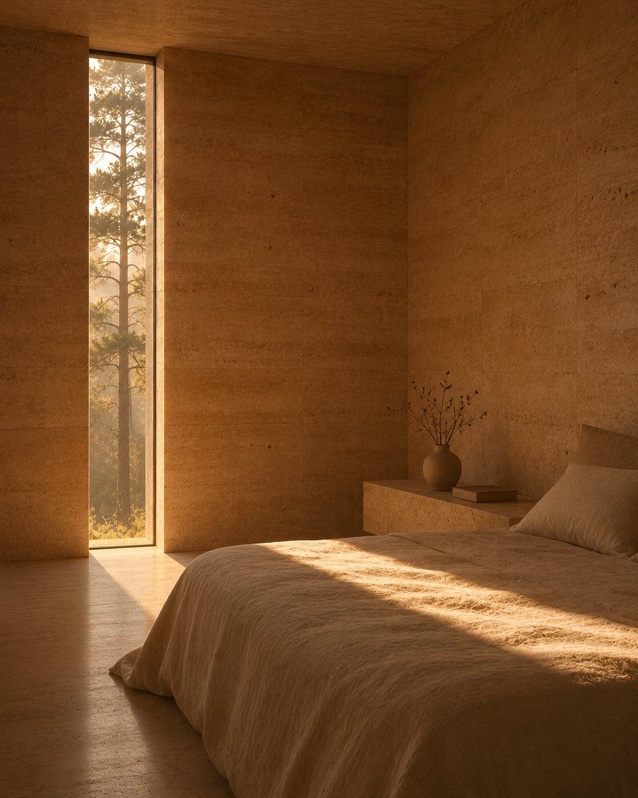
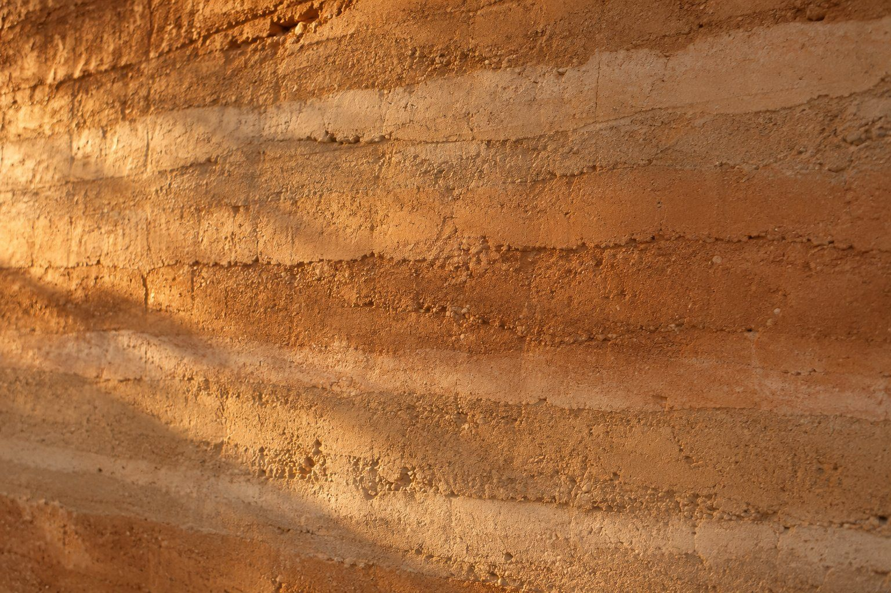
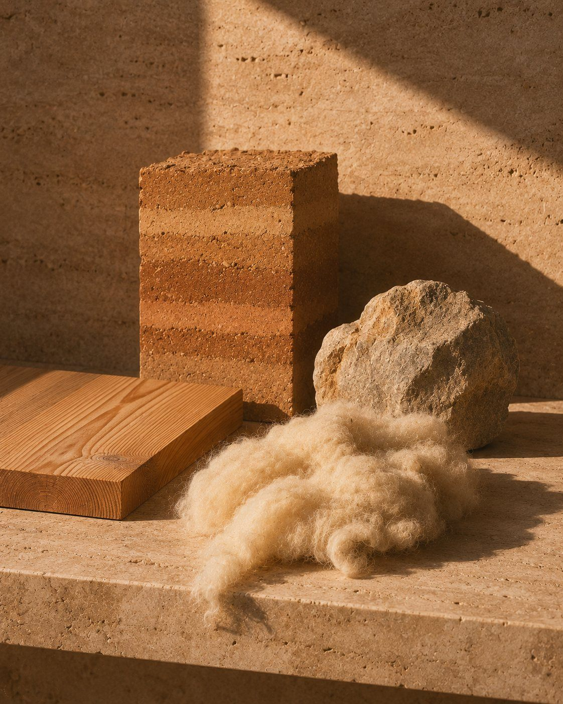

Tysha ArchitectureLviv — Warsaw Est. 2014Now: 23 dB Inside Lull House
Lull House
A house that listens to the forest.
Carpathian foothills · 2025 240 m² · Private house
23 dB inside25 min to Lviv1.2 km to the nearest road01 / 04 projects
01 · The brief41 → 21 dB
They asked for one thing: to sleep without earplugs.
The family Olena, Mark, two kids
A family of four, a fourth-floor flat above a tram line, eleven years of 41 dB nights. They wanted forest, quiet and a twenty-five-minute drive to school and work.
02 · The plot24 dB at night
We listened for seven days before we said yes.
Four plots were on the table. Two had better views. Only this one stayed under 25 dB at night.
SILENCE_AUDIT_DAY_04.JPG06:10 · 24 dB
1.2kmTo the nearest road
24dBAverage night
41dBLoudest sound: a woodpecker
03 · The formL-shaped · 60 cm walls
Turned away from the road.
An L-shaped house wraps around a courtyard. To the road it shows one wall of rammed earth, 60 cm thick. To the forest, it opens completely.
04 · The planLoud → quiet
Loud at the door, quiet at the core.
01Entrance and garageA sound buffer facing the road.38 dB
02Kitchen and livingEast-facing, for morning light.31 dB
03Quiet roomNo screens, one window to the beeches.26 dB
04Main bedroomThe deepest point of the house.21 dB

05 · MaterialsAbsorb, not echo
Materials that absorb, not echo.

Rammed earth
60 cm walls of local clay.

Larch & wool
Larch ceilings soften the room; wool fills every partition.